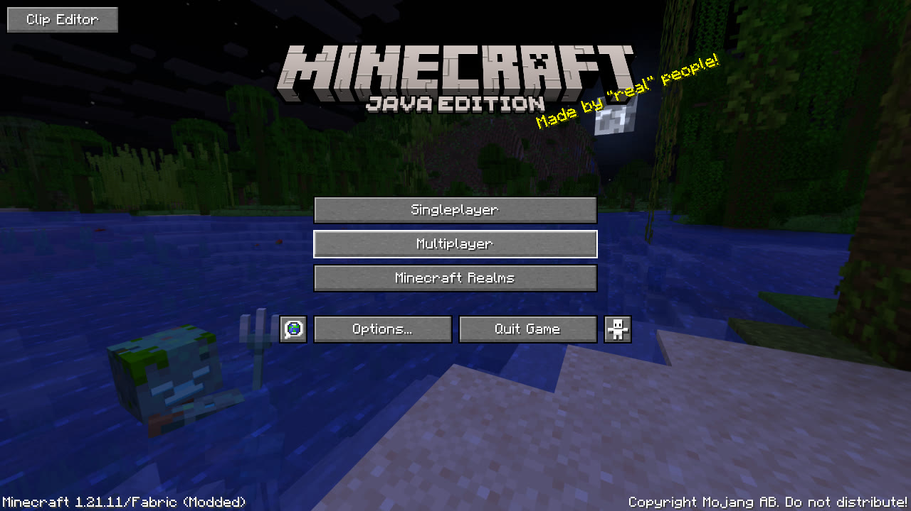
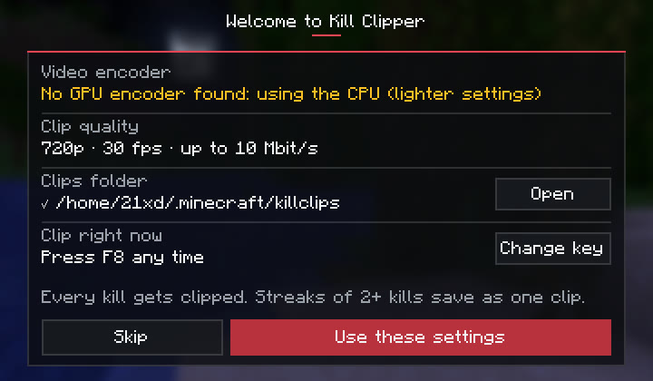
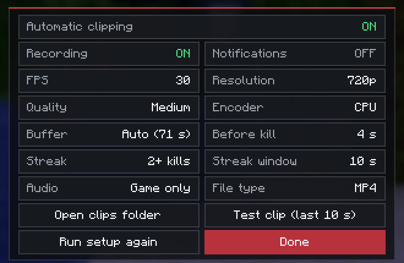
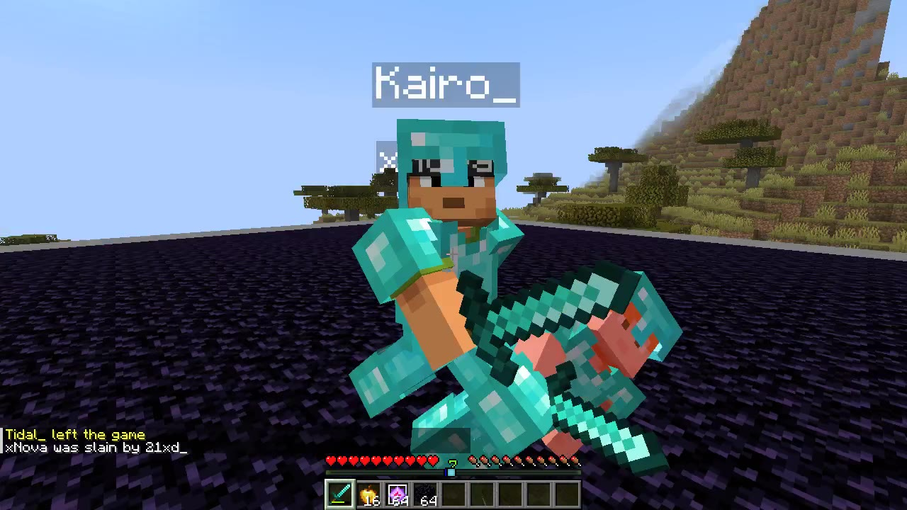
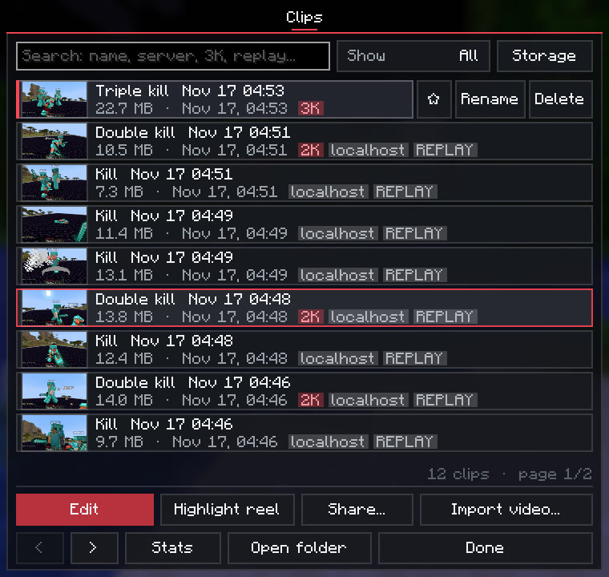
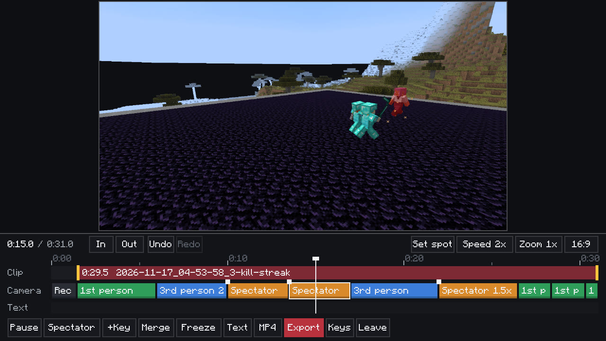
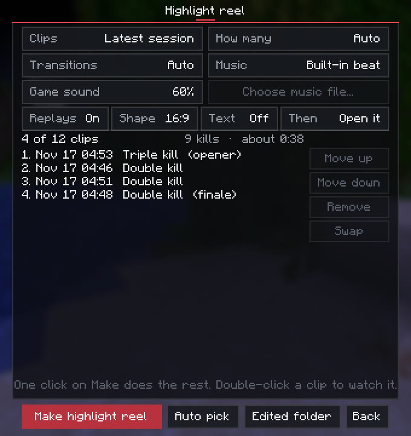

Every kill, clipped.
Kill Clipper records your Minecraft PvP in the background and saves a video the moment you get a kill. Then rewatch the fight from any camera, add slow-mo, and share it. All inside the game, with nothing else to install.
Recorded in Minecraft by Kill Clipper and edited in its Clip Editor, with no other software. The opponents are practice bots on a test server, and these videos have no sound.
Play normally. The clips make themselves.
It's always recording
A rolling buffer keeps the last minute or two of gameplay on disk, not in memory, so it doesn't slow the game down.
It spots your kill
Kill messages, hits, crystals, anchors and beds are all checked. It works on any server with no setup.
It saves the clip
The seconds before and after are saved as a video. Kills in a row become one streak clip. Your deaths stay out. F8 saves a clip any time.
You edit and share
Open the Clip Editor from the main menu, change cameras, add slow-mo, make a highlight reel, and get a link to paste in Discord.
Built for crystal PvP. Works everywhere.
Multi-kill streaks in one clip
Kills inside the streak window save as a single longer clip, Valorant style. Two kills starts a streak by default, and you can change it.
Smooth at 120 fps
Frames go from the graphics card straight to the encoder, so recording barely touches your game fps.
Knows a kill when it sees one
Reads kill messages on any server, including custom wording. Lines where you died never count.
A replay editor in the main menu
Every clip keeps the fight itself, so you can watch it again in first person, third person or a free camera, then export a new video with sound.
See the Clip Editor →Highlight reels in one click
Picks your best kills, cuts them to the beat and adds slow-mo replays of the best ones. Built-in music that's free to post, or your own.
How to make one →A clip library that stays tidy
Thumbnails, search, favourites, tags and renaming. Set a size or age limit and old clips clean themselves up.
See the library →Share with a link
Get link uploads the clip and copies a link that plays right in Discord. There's a vertical 9:16 copy for Shorts and TikTok too.
Game audio built in
Records Minecraft's own sound by default. Switch to whole-computer audio or turn it off.
Kill stats
Kills, deaths, K/D and best streak for every server, saved only on your PC.
EXAMPLE NUMBERSGet your next kill on video
One jar in your mods folder. Recording starts by itself the next time you join a server.
From install to your first highlight reel
Eight short steps. Every screenshot below is the real mod, taken in game.
-
Step 1
Install the mod
Kill Clipper is one jar. It needs Minecraft 1.21.11 with Fabric and Fabric API. FFmpeg and the recorder are inside the jar, so there is nothing else to install.
- Make a Fabric 1.21.11 instance (or install Fabric Loader for the official launcher).
- Put Fabric API and killclipper-1.15.0.jar in the
modsfolder. - Remove any older
killclipperjar, and never use the one ending in-sources.

When it's installed, the title screen gets a Clip Editor button. -
Step 2
Let the first-run setup pick your settings
On the first launch a welcome screen tests each video encoder on your PC with a real short recording, then picks the encoder, fps and resolution for you. Press Use these settings and you're done.
- If your graphics card has a video encoder (NVIDIA or Intel), that's used, so recording costs very little fps.
- It also shows where clips are saved and the Save a clip now key, F8 by default.
- Changed your PC? Run it again from Settings → Run setup again.

The welcome screen. This test PC has no graphics card encoder, so it picked lighter CPU settings. -
Step 3
Play. Kills clip themselves.
Join any server and play normally. The mod keeps the last minute or two of gameplay and saves a clip the moment you get a kill. There is no button to press.
- Streaks: kills within 10 seconds of each other save as one clip, like "Triple kill".
- Your deaths stay out: a clip ends before you die.
- Clip anything: press F8 to save the last few seconds right now. Change the key in Controls.
- Smoothness:
/killclip statusor the settings screen (/killclip menu) tells you if clips are smooth, with a tip if not.

Settings, from /killclip menuor Mod Menu.
A frame from a saved clip: a 3-kill streak, right after the second kill. -
Step 4
Find your clips
Press Clip Editor on the title screen. Every clip is listed with a thumbnail, how many kills it has and the server it came from.
- Search by name, server or tag like
3Korreplay, and filter the list. - Star a favourite, rename a clip, or delete it with everything that belongs to it.
- Storage caps the folder by size or age. Favourites and edited videos are never removed.
- Clips are normal MP4 files in the
killclipsfolder. Open folder takes you there.

The clip library. The REPLAY tag means you can change the camera in the editor. - Search by name, server or tag like
-
Step 5
Rewatch the fight from any camera
Pick a clip and press Edit. The fight itself loads inside Minecraft, so you can watch it from first person, third person or a free spectator camera, then export a new video.
- Drag the yellow ends of the clip to trim it.
- Split the camera track with X, click a part, and set its camera, Speed (slow-mo) and Zoom.
- Spectator parts in a row become keyframes the camera glides through.
- Add a freeze-frame (F) or your own text (T). Ctrl+Z undoes.
- Press Export. Every frame is rendered on its own, so the video is smooth even on a slow PC. It lands in
killclips/Edited.

The real editor, partway through the triple kill. Green is first person, blue third person, orange spectator. The videos on the home page were made exactly like this. -
Step 6
Make a highlight reel in one click
In the Clip Editor press Highlight reel, then Make highlight reel. It picks your best clips, cuts them to the beat of the music and saves one video.
- Clips: latest session, last 24 hours, last 7 days or everything. How many: Auto keeps the ones worth it.
- Music: a built-in beat that's free to post, your own music file, or none.
- Replays: On adds a slow-motion third-person replay of your best kills.
- Reorder, remove or swap clips before making it. Shape: 9:16 makes a vertical reel.

The highlight reel screen. It picked four clips by itself: 9 kills, about 38 seconds. -
Step 8
A kill wasn't clipped? Report it in one command.
Kill Clipper reads kill messages on any server, but some servers word them in new ways. If one is missed, report it right after it happens.
/killclip reportA kill wasn't clipped. Also saves the last 15 seconds as a clip./killclip report wrongA clip was saved that wasn't your kill.Both can be put on keys in Controls → Kill Clipper. The report is saved in
.minecraft/killclip-reports/. It contains recent chat, so read it, then attach it to a support ticket.Also handy
- Stats in the Clip Editor shows kills, deaths, K/D and best streak for every server, saved only on your PC.
- Test clip in settings (or
/killclip test) saves the last 10 seconds so you can check video and sound. - Import video brings any MP4, MOV or MKV into the library to trim it.
Ready for your first clip?
One jar in your mods folder. Recording starts the next time you join a server.
Everything in Kill Clipper
All of this is in v1.15.0.
Clipping
What gets saved, and when.
- Every killEach kill saves the seconds before and after it as a video.
- Streaks as one clipKills inside the streak window (10 s by default) are grouped. Two or more counts as a streak.
- Up to 2 minutesBefore-kill time goes from 5 to 120 seconds. A long streak saves up to 2 minutes, ending at the last kill.
- Deaths stay outWhen you die, kills before it are saved right away, ending just before the death. The next clip starts after it.
- Auto bufferThe buffer sizes itself from your clip settings and lives on disk, so a long one doesn't use memory.
- Save a clip nowPress F8 (or your own key) to save the last few seconds of anything.
- MP4, MOV or MKVPick the file type in settings.
Kill detection
No setup, on any server.
- Server kill messagesKnows mcpvp.club, PvPHQ and FlowPvP, and tries every rule on every server.
- Kill-word fallbackCatches custom wording like "obliterated" or "popped" when the line names you and one other online player.
- Crystals, anchors and bedsSetting one off marks nearby players. Arrows and tridents count as hits too.
- Indirect killsA player you damaged who dies in lava, the void or a fall within 10 seconds is your kill.
- Wins that send you to the lobbyKills at the end of a match are saved before the server moves you.
- Never your deaths"You were killed by Bob" and "Bob won against You" are ignored. Assists and kills someone else finished don't count.
- Report a miss
/killclip reportsaves the moment and a report file when a kill wasn't clipped;/killclip report wrongwhen a clip wasn't yours.
Recording
Its own recorder, tuned to keep your fps.
- Nothing to installFFmpeg is inside the jar for Windows, macOS and Linux.
- Sets itself upThe first launch tests every encoder on your PC and picks the encoder, fps and resolution. Run it again from Settings.
- GPU encodersNVIDIA H.265, NVIDIA H.264, Intel or CPU. If one isn't available it falls back to CPU.
- Light on the gameFrames are converted on the graphics card and handed to the encoder in the background at low priority.
- Game audioMinecraft's own sound by default. Whole-computer audio or no audio are in settings.
- Smoothness checkThe settings screen and
/killclip statusshow how smooth recording is, with a tip when it isn't. - Plays nice with modpacksWorks alongside Sodium, Lithium and friends. If another mod clashes with an editor hook, the game still starts.
- Three camerasFirst person, third person, or a free spectator camera you fly yourself.
- Spectator keyframesDrop keyframes and the camera glides through them on a smooth curve.
- Slow-mo and zoomSpeed from 0.25x to 2x and zoom from 1x to 4x, per part of the clip.
- Trim and splitDrag the ends to trim, split the camera track, merge parts back.
- Freeze-frames, text and undoHold a moment with a freeze-frame, add your own text, and undo or redo any change.
- Smooth exports with soundEvery frame is rendered on its own, so exports are smooth even on a slow PC. Slow-mo slows the sound to match.
- Any videoTrim and convert MP4, MOV, MKV, AVI, WEBM and more, or import one into the clips folder.
- Best clips pickedEvery clip is rated: more kills, quick kills in a row, crystal and anchor kills, long shots and low-health wins.
- Cut to the beatCuts land on the bar lines and each kill hits on the beat, with the built-in track or your own music.
- Instant replaysThe two best kills get a slow-motion third-person replay cut in after them.
- Your callReorder, remove or swap clips first. Pick the time range, transitions, game sound and 9:16 shape.
Clip library
Every clip, easy to find.
- Thumbnails and tagsEach clip shows a picture, its kill count (2K, 3K...), the server and a REPLAY tag when the camera can change.
- Search and favouritesSearch by name, server or tag, filter the list and star the clips you want to keep.
- Rename and deleteRenaming or deleting a clip also handles its replay and thumbnail.
- Storage limitCap the folder by size or age, or press Clean up now. Favourites and edited videos are never removed.
Sharing and stats
Out of the game and into the group chat.
- Get a linkUploads the clip to catbox.moe (free, no account) and copies a link. Anyone with the link can watch.
- Vertical 9:16Saves a cropped vertical copy for Shorts, TikTok and Reels.
- Kill statsKills, deaths, K/D, most kills in one life and best multi-kill, per server and in total.
/killclip stats.
Rewatch the fight from any angle
Every clip saves a small fight replay next to the video. Press Clip Editor on the main menu, pick a clip and press Edit. The fight loads inside Minecraft, fully offline.
Try it in your browser
Pick a camera or scrub the timeline.
A small, playable copy of the in-game Clip Editor. The fight is a made-up example; the cameras, slow-mo and timeline work like the real thing.
The timeline
- Clip track. Drag the yellow ends to trim. Export only renders the part between them.
- Camera track. The fight is split into parts. Click a part, then set its POV, Speed and Zoom.
- Spectator keyframes. Fly to a spot and drop a keyframe. Add more and the camera glides through them.
- Freeze-frames and text. F holds a moment, T adds your own text to the export. Ctrl+Z and Ctrl+Y undo and redo.
- Replays look like what you saw. Your aim is recorded every frame, along with swings, crystal placing and held-item cooldown.
Export
- Rendered frame by frame, so it's smooth even if your PC is slow. A progress bar shows while it works.
- Carries the sound from your original clip, slowed to match any slow-mo.
- Saved to
killclips/Editedas MP4, MOV or MKV, and opened in your video player when done. - Turn on 9:16 for a vertical copy, then Get link to share it.
Which clips can change camera? Clips recorded with the mod installed keep a fight replay. Older or imported videos open in the trimmer instead.
Editor keys
| Key | What it does |
|---|---|
| P | Play or pause |
| ← → | Jump back or forward |
| I O | Trim the start or end at the playhead |
| X | Split the camera track at the playhead |
| Delete | Merge a part into the one before it |
| K | Drop a spectator keyframe |
| C | Move the keyframe to where the camera is now |
| W A S D | Fly the spectator camera. Space up, Shift down, Ctrl faster |
| F | Add a freeze-frame at the playhead |
| T | Add text |
| Ctrl+Z · Ctrl+Y | Undo, redo |
| E | Hide or show the editor |
| H | Show the full key list |
Try it on your own fights
Install the mod, get a kill, and the replay is waiting in the Clip Editor.
Get Kill Clipper
One jar. FFmpeg and the recorder are inside, so there's nothing else to install.
bd6fcbae30ab39945a1a601f668654663de6ca9a2646c2febe5ffdfab2930f12Next step
New here? The step-by-step guide walks through setup, the editor and highlight reels. Put the jar in your launcher's mods folder and delete any older Kill Clipper jar. The install guide has steps for the official launcher, Prism, CurseForge, Modrinth App, ATLauncher and MultiMC.
Pick your launcher
Every launcher needs the same three things: a Fabric 1.21.11 instance, Fabric API, and the Kill Clipper jar in the mods folder.
Commands and settings
| Where | What it does |
|---|---|
/killclip menu | Opens the settings: FPS, resolution, quality, encoder, file type, buffer and clip padding. Mod Menu adds a button for it too. |
/killclip status | Shows game fps and the share of frames repeated. Under a few percent is smooth. If the game runs below your recording FPS, lower the recording FPS to match. |
/killclip stats | Your kills, deaths, K/D and best streaks, per server and in total. |
| F8 | Saves a clip of the last few seconds right now. Change the key in Controls → Kill Clipper. |
/killclip report | A kill wasn't clipped: saves the last 15 seconds and a report in killclip-reports. Add wrong when a clip wasn't your kill. |
/killclip test | Saves a test clip so you can check video and sound. |
/killclip folder | Opens the clips folder. |
/killclip on · off | Turns kill clipping on or off. |
guessKills | Kill-word fallback, on by default. Set to false in config/killclipper.json if it ever clips something that wasn't a kill. |
openAfterExport | Exports open in your video player when saved. Set to false to stop that. |
Get help
Check the common fixes first. If that doesn't solve it, open a ticket and it goes straight to the developer.
Ticket ready
Ticket is filled in. Submit it on GitHub to send it; you'll get replies by email there.
Common fixes
Do I need Medal, OBS or FFmpeg?
No. The recorder and FFmpeg are inside the jar, which is why it's over 100 MB.
Where are my clips?
In the killclips folder of your Minecraft or instance folder. Videos you export from the editor are in killclips/Edited. The Clip Editor on the main menu lists both.
My clips look choppy.
Run /killclip status after a match. If the game fps is lower than your recording FPS, set the recording FPS to match (for example 60). On NVIDIA cards, pick NVIDIA H.265. Sodium, Lithium, FerriteCore and ImmediatelyFast give the biggest fps boost.
A kill wasn't clipped.
Open a ticket and paste the exact chat line the server showed. That's all that's needed to add the server's format.
It clipped something that wasn't a kill.
Set "guessKills": false in config/killclipper.json. Known server messages and hit tracking still work.
Edit does nothing, or the replay won't open.
Update to the newest version first; several replay loading bugs were fixed in v1.11. If it still fails, the clip list says why, and logs/latest.log has lines starting with "Replay".
The game crashes on startup.
Check you're on Minecraft 1.21.11 with Fabric API and Java 21 or newer, and that only one killclipper jar is in the mods folder. Only use the jar named killclipper-x.y.z.jar, not a "-sources" one.
Will it get me banned?
It only records what your own game already shows and receives. It sends nothing to the server and doesn't change gameplay. Check each server's rules on client mods if you're unsure.
Founders
Kill Clipper is made by a crystal PvP player who wanted every kill saved without running a separate clipping app.
![21xd_'s Minecraft skin]() DRAG TO TURN
DRAG TO TURN

21xd_
Plays crystal PvP on mcpvp.club, PvPHQ and FlowPvP. Started Kill Clipper to clip every kill and streak automatically, with smooth 120 fps video that doesn't cost game fps.
Release history
Every release, newest first. Times are UTC.
1.15.0Smoother recording and a first-run setupLATEST17 Nov 03:38
- The picture is shrunk on the GPU before it is copied, and frames go to the encoder without extra copies, so recording costs fewer fps.
- NVIDIA encoders are tuned so frames never pile up, and the bitrate is capped for smaller files (50 Mbit/s for 1080p 120 fps H.265).
- The settings screen shows how smooth recording is right now, with a tip when it isn't.
- A welcome screen on first launch (once after updating, too) tests each encoder on your PC and picks the encoder, fps and resolution for you. Run it again from Settings.
- New Save a clip now key: F8, changeable in Controls.
Sharper kill detection
- If you hit someone and another player gets the kill, it no longer counts as yours. Assists don't count either.
- Deaths are seen even on servers that hide other players' health.
- Nicknames from the player list are understood.
- Leaving with /lobby, /hub and similar right after hitting someone no longer counts as a win.
- More server formats: Hypixel themed and final kills, The Pit, practice Winner/Loser, bounty and lifesteal, combat logging, and lines that say "You".
- Kills are placed where your opponent went down, not on the victory screen or in the lobby, so clips and highlight reels center on the kill. A win announced again in the lobby no longer counts twice.
Report a missed or wrong kill
/killclip reportwhen a kill wasn't clipped (it also saves the last 15 seconds), or/killclip report wrongwhen a clip wasn't your kill. Both can be bound to keys in Controls → Kill Clipper.- The report is saved in
.minecraft/killclip-reports/. It holds recent chat, so read it before you send it.
Quiet
- No more "Loaded. Recording..." message in chat.
- "Saving clip" / "Clip saved" are off by default; turn Notifications on in the settings to get them back.
- Problems show once above the hotbar, never in chat.
Clip library and editor
- Thumbnails, titles, tags, search, filters and favourites in the library. Rename or delete a clip with everything that belongs to it.
- Storage limits by size or age, with "Clean up now". Favourites and edited videos are never removed.
- Editor: undo/redo (Ctrl+Z / Ctrl+Y), freeze-frames (F), and your own text (T) that shows in the exported video.
Install
Download killclipper-1.15.0.jar below and put it in your mods folder in place of the old one. Only that one file is needed.
1.14.1Highlight reel: no text by default17 Nov 01:27
- Highlight reels are now clean: no kill popups, no "Highlights" intro and no "GG" closing title. Just your clips, the transitions and the music.
- Want the text back? Press Text: Off on the highlight reel screen to switch it to Text: On. The choice is remembered.
Install
Download killclipper-1.14.1.jar below and put it in your mods folder in place of the old one. Only that one file is needed.
1.14.0A smarter highlight reel16 Nov 21:00
Press Make highlight reel and everything is done for you.
- Best clips picked for you: every clip is rated. More kills count most, then quick kills in a row, crystal and anchor kills, long-range hits and wins on low health. Clips of the same fight are only used once. How many: Auto keeps the clips that are worth it, up to about a minute.
- Good pacing: the best clip opens the reel, the rest follow in the order they happened, and the second best closes it.
- On the beat: every cut lands on a bar line, the two beats before a kill speed up slightly, and the kill hits on the beat. With your own music the tempo and bar lines are found automatically, and a quiet intro is skipped.
- Polish: popups for each kill (Kill, Double kill, Triple kill... with Clutch, Long shot or Explosive under it), slow motion on the final kill, a "Highlights" intro and a "GG" closing title, and transitions that follow the music (a zoom into streaks, a flash into replays).
- Instant replays: for the two best kills that have a fight replay, the mod films the kill again from the third-person camera in slow motion and cuts it in after the kill. This plays the replay in the game for a few seconds; press Esc to skip it. Turn it off with Replays: Off.
- Check before making: the list shows the picked clips. Select one to Move up, Move down, Remove or Swap it for the next best clip; double-click to watch it. Auto pick starts over.
- Options: Shape: 9:16 makes a vertical reel for TikTok, Shorts and Reels. Then: Get link uploads the reel and copies a share link instead of opening it.
New clips save the details of each kill (when it happened, how, your health and the distance) so the reel can use them. Older clips still work, rated on their number of kills.
Looks
The highlight reel screen uses the new flat style from v1.13.0.
Install
Download killclipper-1.14.0.jar below and put it in your mods folder in place of the old one. Only that one file is needed.
1.13.0A cleaner, modern look16 Nov 20:45
- Every screen now has a flat, dark style: see-through panels with a thin red accent line, flat buttons that light up smoothly when you point at them, and the main action on each screen (Edit, Export, Make highlight reel, Get a link) filled in red.
- Settings show their name and value side by side, with ON in green, so you can read them at a glance.
- In the clip list, the picked clip is marked with a red bar, and clips you can edit with camera views have a small REPLAY tag.
- Screens fade in and slide up slightly when they open.
- The editor, stats table, export progress bar and on-screen messages use the same colours.
- The settings screen now fits small windows; before, the Done button could be cut off.
Nothing works differently: every button, key and setting does exactly what it did before.
Release on GitHub1.12.0Highlight reel11 Nov 04:58
Turn a session of kills into one montage with a single button.
- Open Clip Editor on the title screen and press Highlight reel.
- It picks your best clips (biggest streaks first, then your newest kills) and plays them in the order they happened.
- Each kill is cut down to the moment around it, and a streak keeps all of its kills.
- Choose which clips: Latest session, Last 24 hours, Last 7 days or All clips, and how many (3 to 20).
- Transitions: Mixed, Fade, Flash, Slide or Hard cut.
- Music: a built-in beat made by the mod, so it is free to post on YouTube or TikTok, your own music file (mp3, wav, ogg, m4a, flac), or none. The cuts land on the beat of the built-in track.
- Game sound can be kept under the music at 30%, 60% or 100%, or turned off.
- The reel is saved to
killclips/Edited/and opens in your video player when it is done.
Install
Download killclipper-1.12.0.jar below and put it in your mods folder in place of the old one. Only that one file is needed.
1.11.5Replays look like what you saw11 Nov 01:57
- First-person hands: replays now record every swing, the hand bob when you place crystals or blocks, and the attack cooldown that lowers your held item, then play them back exactly. This works for clips recorded with 1.11.5 or newer. Older clips keep the old, rougher swing.
- Spectator camera: flying around while editing is smooth now. The camera moves every frame instead of 20 times a second, even while the replay is paused.
- Players blinking out: if you use EntityCulling, it no longer hides players during replays. It was guessing too late when the camera jumped, so players disappeared in spectator view.
- Blocks popping in: an export now waits until the world around the camera is drawn before it records the first frame.
1.11.4Edit never opened some replays11 Nov 01:37
Fixed
- Edit never opened some replays. If a clip started right at the beginning of its recording (for example, a kill soon after joining a match), the replay waited forever before the world even loaded. Those replays open now.
- Kill clipping could switch itself off on Windows. On startup the mod updates its settings file, but Windows didn't allow the file to be replaced while the mod was still reading it, and the mod then turned kill clipping off. Settings now save properly, and if saving ever fails, clipping stays on.
1.11.3Faster replays11 Nov 01:11
- Pressing Edit no longer freezes the game while the replay file is read. It loads in the background while the clip list says "Opening the replay...".
- Opening a replay skips the old sounds, particles, explosions and chat from before the clip, so it gets to your clip faster. This matters most after a long time on one server.
- Going back on the timeline no longer reads the whole replay file from disk again.
Download tip
- Only download
killclipper-1.11.3.jar. Releases no longer include the "-sources" jar, which looked the same but crashed the game.
1.11.2A replay that never opened could take over a real server11 Nov 00:44
Fixed
- A replay that never opened could take over a real server. If Edit got stuck on "Opening the replay...", the replay kept running in the background. Joining a server afterwards made the game flicker between the replay and the server, and some servers would not let you in. Joining any server now closes a replay first, and a replay never touches a world that isn't its own.
- Edit no longer hangs forever. If a replay hasn't opened after 30 seconds, it stops and the clip list says why it couldn't load.
- Pressing Done or Esc in the clip list while a replay is opening cancels it.
- When a replay can't load,
logs/latest.lognow says what went wrong (look for lines starting with "Replay").
1.11.1Edit did nothing after an export went wrong11 Nov 00:07
Fixed
- Edit did nothing after an export went wrong. If an export failed partway (for example the video encoder stopped), the game's clock stayed held by the unfinished export, so the next replay could never load and pressing Edit looked like it did nothing. A failed export now lets go of the clock straight away, and the editor reopens with the reason it failed.
- If no frame can be captured for 15 seconds, the export stops by itself instead of hanging.
Changed
- The clip list shows "Opening the replay..." after you press Edit, so you can tell it is loading.
1.11.0Smooth exports10 Nov 23:34
- The editor now exports frame by frame. Every frame of the video is rendered on its own, so the export is perfectly smooth even when the game runs below your recording FPS. A slow PC just takes a little longer to export.
- Exports no longer depend on the recording buffer, so long edits and slow-mo can't run out of room.
Sound in exports
- Exports now carry the sound from your original kill clip, the same sound you heard while playing (including your own hits and crystals). Slow-mo parts slow the sound down to match.
- Clips recorded with v1.11.0 or newer line the sound up exactly. Older clips can be off by up to a second.
- If the clip's video was deleted, the export is saved without sound and the editor says so.
Export loading bar
- A green progress bar shows at the top of the screen while the clip exports. It is drawn after each frame is captured, so it never shows up in the video.
Your deaths stay out of kill clips
- When you die (death screen, or a chat line saying you died or lost), any kills before it are saved right away, ending just before the death.
- The next clip starts after your death, so the round you lost isn't in the clip even with a long before-kill time. At least 2 seconds before the kill are always kept.
1.10.1Clearer exports10 Nov 06:41
- The editor's saved settings (
.kceditfiles) no longer sit next to your clips, where they looked like the exported video. They now live in a hidden.editsfolder; old ones are moved there automatically. - Your exported video is the MP4 / MOV / MKV in
killclips/Edited. Pick the type with the button next to Export. - Export now tells you right away when recording is off, instead of playing the whole clip first.
- Pressing Esc during an export stops it and takes you back to the editor with a message, instead of recording the pause menu into the video. Closing the replay mid-export also says the export was stopped.
1.10.0Finished edits get their own folder10 Nov 05:42
- Exports from the clip editor are now saved in an Edited folder inside your clips folder (
killclips/Edited), apart from the raw kill clips. - When an export is saved, it opens straight away in your video player so you can watch the finished edit. With the 9:16 shape on, the vertical version opens once it is made.
- Trimmed videos from the video trimmer also go to the Edited folder and open when saved.
- Clicking the "Saved" message in the editor opens the Edited folder.
- Edited videos also show up in the clip list, so you can find them from the editor.
- To stop exports from opening by themselves, set
"openAfterExport": falseinconfig/killclipper.json.
1.9.2Replays keep the fight after a win30 Oct 23:28
- When a win sent you back to the lobby, the replay saved next to the clip could show the lobby instead of the match. This happened when the duel started less than your before-kill time earlier: the replay was taken from the server you were on when the clip begins, which was the lobby.
- The replay now comes from the server you were on when the kill happened. A kill or win announced right after you arrive in the lobby still uses the match you just left.
- Clips you already saved keep their old replay; new fights are saved correctly.
1.9.1Smooth first-person aim30 Oct 19:34
- Your aim is now recorded on every frame you see, not just 20 times a second. Replays play it back frame by frame, so flicks and tracking look the way you played them instead of jittery.
- This works for fights recorded with v1.9.1 or newer. Older replays still use the smoothed 20-per-second aim.
Share the edited clip
- After an export, a Get link button appears next to the "Saved" message in the editor. It uploads the edited clip and copies a link you can paste in Discord.
1.9.0Replays look right30 Oct 19:15
- You now show up in spectator and third person on every server. A stand-in with your skin walks, swings, crouches, wears your armour and takes hits like any other player.
- First person no longer jerks around. Knockback, crystal and anchor explosions, and server corrections used to push the replayed you between recorded ticks.
- A replay that ends in your death no longer opens the death screen.
Spectator keyframes (like Replay Mod)
- In spectator, fly the camera to a spot and press K (or +Key) to drop a keyframe.
- Move to another time and spot and add another.
- The camera glides on a smooth curve through all the keyframes, easing in at the first and out at the last.
- Keyframes show as white marks on the camera track. C / Set spot moves the keyframe under the playhead to where the camera is now.
Share as a link
- Share... → Get a link uploads the clip and copies a link.
- Paste the link in Discord and the video plays right in the chat. No webhook needed.
- Clips go to catbox.moe (free, no account). Anyone with the link can watch.
- You can still pick a vertical 9:16 version.
Export
- After an export the editor comes back and tells you the file name it saved in your clips folder. Click the message to open the folder.
- If an export can't be saved, the editor tells you why (for example the buffer is too short, or recording is off).
1.8.0Editor30 Oct 05:30
- The video now sits on top, with the timeline and controls underneath it like a normal video editor. Nothing covers the picture anymore.
- Spectator camera:
- Fly with WASD, Space and Shift (Ctrl to go faster) while the editor is open.
- Turn it by dragging on the video. With the editor hidden (E), use the mouse.
- You can steer it while the replay plays, too. Press C or Camera spot to keep the spot.
- Your own aim and movement play back smoothly. Before, it could stutter and look like your aim was jerking.
- Keys changed so they don't clash with flying the camera:
- P plays / pauses.
- X splits.
- The keys list now starts hidden; press H or Keys to show it.
Joining servers
- Joining servers is faster. Recording fight replays used to rewrite every incoming packet (thousands of chunks while joining). It now just copies them.
Other
- Discord uploads of long clips drop to 60 or 30 fps so they stay sharp.
- The 9:16 copy, trimming and Discord shrinking run at low priority, so they don't cost game fps.
- An export that slow-mo would make longer than the buffer warns you before it starts.
- Stats are saved in the background and can't be half-written by a crash.
- Share temp files are cleaned up.
1.7.0One editor for trimming and camera views30 Oct 02:48
- Pick a clip in the Clip Editor list and press Edit. The fight opens straight into the editor; you no longer need to press E first.
- The editor now works like a normal video editor:
- Clip track: drag the yellow ends to trim, or press In / Out (I / O) to trim at the playhead. Export only renders the trimmed part, and the bar shows how long that will be.
- Camera track: the fight is split into parts. Click a part to pick it, then use POV (1st person, 3rd person, spectator), Speed and Zoom to change that part.
- Split (S) starts a new camera part at the playhead, and Merge (Delete) joins a part into the one before it.
- For a spectator part, press E to hide the editor, fly the camera with WASD, Space and Shift, then press C (or Camera spot in the editor) to save that spot.
- Press H or the Keys button to show or hide a list of every editor key.
- Clips without a fight replay (older or imported videos) still open the trim screen from the same Edit button.
- Exported clips no longer show chat or the "saving" message.
1.6.0Slow-mo and zoom in the Clip Editor30 Oct 00:42
- Two new buttons above the timeline: Speed (0.25x, 0.5x, 1x, 1.5x, 2x) and Zoom (1x to 4x).
- Pick a speed and zoom, then press Add switch. That switch sets the camera, speed and zoom from that point, and speed and zoom blend smoothly into the next switch, so you get proper speed ramps and slow zoom-ins.
- Exports keep the slow-mo, so a slowed-down part makes the exported clip longer.
Vertical 9:16 export
- The 16:9 / 9:16 button in the editor also saves a vertical copy (
_vertical.mp4) cropped around the middle, ready for YouTube Shorts, TikTok and Reels. - In the Clip Editor list, Share... > Make 9:16 copy only works on any clip.
Kill stats
- Kills, deaths, K/D, most kills in one life, best multi-kill and streak count, for every server and in total.
- Open it with the Stats button in the Clip Editor, or type
/killclip statsin game. - Saved only on your PC in
config/killclipper-stats.json. It counts from this version on.
Share to Discord
- Share... in the Clip Editor sends a clip to a Discord channel through a webhook (Channel settings > Integrations > Webhooks > New Webhook > Copy Webhook URL).
- Clips are shrunk automatically to fit Discord's 10 MB limit, and can be sent normal or vertical.
- The webhook URL is remembered.
1.5.2More game fps while recording at 120 fps29 Oct 23:36
- No frame copying on the game thread. Each recorded frame now goes from the graphics card straight to the encoder. Before, the game copied every frame itself (about 3 MB, 120 times a second at 1080p). That copy now happens in the background, so the game has more time for each frame.
- Less memory. Frame memory the game no longer needs isn't allocated at all.
- Plays nicer with other mods. If another mod changes the parts of Minecraft the clip editor hooks into, the game still starts instead of crashing (only that editor detail stops working).
Tips for more fps:
- Install Sodium (usually the biggest fps boost), plus Lithium, FerriteCore and ImmediatelyFast, all for 1.21.11.
- In ATLauncher, open your instance's Settings → Java/Minecraft. Give it 4 to 6 GB of memory and add
-XX:+UseZGC -XX:+ZGenerationalto the Java arguments. It cuts down on the small freezes Java's memory cleanup can cause. - Set the recording FPS no higher than the fps your game actually gets (
/killclip statusshows both), and keep the encoder on NVIDIA H.265.
Minecraft 1.21.11, Fabric Loader 0.19.3 or newer, Fabric API, Java 21 or newer. Put killclipper-1.5.2.jar in your mods folder and remove older killclipper jars.
1.5.1Smoother saved clips and more reliable fight replays29 Oct 23:19
- No more hitch every second. Saved clips had a tiny 2 to 3 frame stutter at many of the one-second joins inside the clip, and the sound could drift about 50 ms over a clip. The pieces now join seamlessly. In testing, a 7 s clip went from 4 hitches to 0.
- Replays survive a win → lobby move. If a server sent you back to the lobby right after a kill, the clip's fight replay could come out empty or show the lobby. Each clip now keeps the replay of the game it happened in, even after a server switch or disconnect.
- Two clips saved close together no longer risk losing part of the first one.
- A clip save that gets stuck now gives up after a minute and reports an error.
Minecraft 1.21.11, Fabric Loader 0.19.3 or newer, Fabric API, Java 21 or newer. Put killclipper-1.5.1.jar in your mods folder and remove older killclipper jars.
1.5.0Longer clips and an automatic buffer29 Oct 22:54
Longer clips and an automatic buffer. Includes everything from v1.4.0 (the in-game Clip Editor with camera views).
- Clips up to 2 minutes. "Before kill" now goes up to 30, 45, 60, 90 or 120 seconds. A long streak saves up to 2 minutes, ending at the last kill.
- Buffer: Auto (new default). The buffer sizes itself from your clip settings: the time before the kill, room for a streak of up to a minute, and the time after. For example, 10 s before the kill uses a 77 s buffer and 120 s uses 187 s. The Buffer button shows the size it picked. You can still set 30, 60, 120, 180 or 300 s yourself. Existing configs switch to Auto once.
- Smaller, faster replays. When a server moves you to another game (lobby to match and back), the fight replay starts fresh. Each clip's replay then only holds the current game, so saving it is quicker and the file is smaller.
The buffer is kept on disk, not in memory, so a longer buffer doesn't slow the game. At 1080p it uses roughly 2 to 6 MB per second of buffer, depending on quality.
Minecraft 1.21.11, Fabric Loader 0.19.3 or newer, Fabric API, Java 21 or newer. Put killclipper-1.5.0.jar in your mods folder and remove older killclipper jars.
1.4.0The in-game clip editor, like Flashback29 Oct 22:45
The in-game clip editor, like Flashback: watch your fights again from any camera and export new clips.
Open it: the new Clip Editor button at the top left of the main menu lists every clip in your clips folder. Clips saved with v1.3.0 or newer show [camera views].
Edit a fight (clips with camera views): pick the clip and press Edit fight (cameras). The fight loads inside Minecraft, fully offline.
- V switches camera: first person, third person, or spectator (free camera: WASD, Space up, Shift down, Ctrl faster, mouse to look).
- P pauses, ←/→ jumps 5 s, ↑/↓ changes speed.
- E opens the timeline. Click the bar to jump, then Add switch to set the camera from that moment (green first person, blue third person, orange spectator). Two spectator switches in a row fly the camera smoothly between the two spots. Remove deletes the switch nearest the playhead. Edits are saved automatically.
- Export plays the clip from the start with your camera switches and saves it as a new video (MP4, MOV or MKV). It records in real time, so the clip must fit in your Buffer setting.
- Leave (or Esc → Disconnect) goes back to the clip list.
Trim / convert any video: works on MP4, MOV, MKV, AVI, WEBM and more. Drag along the bar to preview, Set start and Set end, choose MP4, MOV or MKV, then Export. Import video... copies a video from anywhere on your PC into the clips folder.
It's all client side: recording only saves what your game already receives and playback has no server connection.
Minecraft 1.21.11, Fabric Loader 0.19.3 or newer, Fabric API, Java 21 or newer. Put killclipper-1.4.0.jar in your mods folder and remove older killclipper jars.
1.3.0First stage of the in-game clip editor29 Oct 21:53
First stage of the in-game clip editor: every clip now also saves its fight as a replay.
- Fight replays. Next to each video the mod now saves a
.kcreplayfile with the fight itself: every player's movement, hits, crystals and blocks, plus your own movement and gear. The upcoming main-menu editor uses these to show the fight from first person, third person or a free spectator camera. Only clips saved with v1.3.0 or newer will have one, so keep this version installed while you play. - Replays are small (about 300 KB per minute in testing) and are written in the background at low priority. Turn them off with
saveReplays: falsein the config. - Clip file type. New "File type" button in the settings: MP4 (default), MOV or MKV.
Minecraft 1.21.11, Fabric Loader 0.19.3 or newer, Fabric API, Java 21 or newer. Put killclipper-1.3.0.jar in your mods folder and remove older killclipper jars.
1.2.3Performance pass so the game stays smooth while recording29 Oct 06:53
Performance pass so the game stays smooth while recording. Includes everything from v1.2.2 (frames converted on the GPU like Medal, about 60% less data per frame).
- Recorder runs at lower priority. FFmpeg now runs below normal priority, so whenever the CPU is busy Minecraft gets it first. With the NVIDIA encoder the recorder needs very little CPU anyway.
- Less work every tick. Arrow and trident hit tracking now only looks at projectiles near you instead of every loaded entity.
- Frame copies from the GPU were checked and never make the game wait; they finish in the background.
Tip: in /killclip status, if the game fps is below the recording FPS, lower the recording FPS to match (for example 60). Recording faster than the game runs only repeats frames and makes files bigger.
Minecraft 1.21.11, Fabric Loader 0.19.3 or newer, Fabric API, Java 21 or newer. Put killclipper-1.2.3.jar in your mods folder and remove older killclipper jars.
1.2.2Records the way Medal does29 Oct 06:46
Records the way Medal does: the colour conversion now happens on the graphics card.
- Before: every frame was copied off the GPU as full RGBA (8 MB at 1080p) and FFmpeg converted it to video colours on the CPU.
- Now: a small shader converts the picture to NV12 (the format video encoders use) on the GPU, so each frame copied is 3 MB, about 60% less data, and FFmpeg has no colour conversion left. With the NVIDIA encoder the CPU now does almost nothing per frame, which should make clips much smoother.
- The picture is the same as before. Width is rounded down to a multiple of 4 pixels (at most 3 pixels lost).
- If the shader can't run on a PC, the mod falls back to the old method automatically. To force the old method, add
-Dkillclip.cpuConvert=trueto your Java arguments.
Minecraft 1.21.11, Fabric Loader 0.19.3 or newer, Fabric API, Java 21 or newer. Put killclipper-1.2.2.jar in your mods folder and remove older killclipper jars.
1.2.1Fixes choppy clips (a high "frames repeated" number in /killclip status)29 Oct 06:20
- Cause: when capture fell behind, the mod sent the same full-size frame to FFmpeg several times to keep the frame rate. At 1080p and 120 fps that was close to 1 GB of data every second, which made it fall further behind.
- Fix: each captured frame is now sent once, over a fast local connection instead of a process pipe, and FFmpeg fills in repeats itself. That is much less data to move.
/killclip statusnow also shows the game's own fps. Recording at 120 fps while the game runs at 60 will always repeat about half the frames, so set FPS to match what your game actually reaches.
Minecraft 1.21.11, Fabric Loader 0.19.3 or newer, Fabric API, Java 21 or newer. Put killclipper-1.2.1.jar in your mods folder and remove older killclipper jars.
1.2.0Smoother recording and smaller files29 Oct 05:25
- H.265 on NVIDIA: new encoder choice "NVIDIA H.265" in the menu, the same format Medal's "GPU H265" uses. Files are much smaller at the same quality.
- Less stutter while recording: the mod no longer creates a new GPU buffer for every captured frame; it reuses a few. FFmpeg's color conversion now runs on several CPU threads.
- Smoothness check:
/killclip statusshows what share of frames were repeated because capture fell behind. Under a few percent is smooth; above 10% will look choppy, so try 60 fps or 720p. - Also in this release (from v1.1.9): Before kill up to 30 seconds, and "Name won against You" is no longer counted as your kill.
Minecraft 1.21.11, Fabric Loader 0.19.3 or newer, Fabric API, Java 21 or newer. Put killclipper-1.2.0.jar in your mods folder and remove older killclipper jars.
1.1.9Two fixes to kill detection and the clip window29 Oct 05:14
- Before kill now has 15, 20 and 30 second options, up to 30 seconds. The default is still 5 seconds.
- Kill detection counts only your kills. A line like "Bob won against You" meant you lost, and it was being counted as your kill. Now it is ignored. "Bob lost to You" and "Bob was killed by You" still count.
Includes everything from v1.1.8.
Minecraft 1.21.11, Fabric Loader 0.19.3 or newer, Fabric API, Java 21 or newer. Put killclipper-1.1.9.jar in your mods folder and remove older killclipper jars.
1.1.8Kills are counted even when a server uses wording the mod has never seen29 Oct 04:54
- Kill-word fallback: if no known rule matches, a chat line counts as your kill when it has a kill word (killed, destroyed, obliterated, popped, eliminated, taken out, won, and so on), names you and exactly one other online player, and says you did it. That means either "Bob was taken out by You" or "You popped Bob".
- Custom wording: dozens of kill words like destroyed, obliterated, demolished, eviscerated, crushed, popped, and messages that say "You" instead of your name ("You obliterated Bob!").
- Lines where you died or lost ("You were killed by Bob", "You lost to Bob"), player chat ("Bob: You killed Bob") and lines naming more than one other player are ignored.
- Turn it off with
"guessKills": falseinconfig/killclipper.jsonif it ever clips something that wasn't a kill.
Includes everything from v1.1.7.
Minecraft 1.21.11, Fabric Loader 0.19.3 or newer, Fabric API, Java 21 or newer. Put killclipper-1.1.8.jar in your mods folder and remove older killclipper jars.
1.1.7Fixes FlowPvP kill messages that start with a dagger emoji, such as "🗡 Name has …29 Oct 04:42
Fixes FlowPvP kill messages that start with a dagger emoji, such as "🗡 Name has been killed by You."
Includes everything from v1.1.6.
Minecraft 1.21.11, Fabric Loader 0.19.3 or newer, Fabric API, Java 21 or newer. Put killclipper-1.1.7.jar in your mods folder and remove older killclipper jars.
1.1.6Kill messages are now recognized on every server, not just the ones the mod knew …29 Oct 04:28
Kill messages are now recognized on every server, not just the ones the mod knew about.
- Every server's rules everywhere: the kill-message rules for mcpvp, PvPHQ and FlowPvP are now tried on all servers.
- Common kill-message formats: for example "Bob was killed by You", "You eliminated Bob", "Bob lost the duel to You" and "You won the duel against Bob". Rank tags like [VIP], emoji and health numbers around the names are fine.
- Crystal PvP messages: "crystalled", "popped", "anchored", "blown up" and similar.
- A message only counts when you are the killer and the other player was online. Lines where a player is just typing in chat ("Name: ..." or "<Name> ...") are ignored.
Includes everything from v1.1.5 (lobby-transfer saving, crystal/anchor/projectile hit tracking, any cause of death).
Minecraft 1.21.11, Fabric Loader 0.19.3 or newer, Fabric API, Java 21 or newer. Put killclipper-1.1.6.jar in your mods folder and remove older killclipper jars.
1.1.5Kills at the end of a match are no longer lost when the server sends you back to …29 Oct 04:07
Kills at the end of a match are no longer lost when the server sends you back to the lobby.
- Match wins: when the server moves you to the lobby or another server, any kills waiting to be clipped are saved right away. Before, they were dropped. If you are alive and hit a player in the last 5 seconds before the move, that counts as a kill too, since the match ended with you winning. If you died, nothing is counted.
Also includes everything from v1.1.4:
- Crystal PvP: popping an end crystal, or setting off a respawn anchor or bed, marks the players near it. If one of them dies soon after, it is your kill.
- Any cause of death: a player you damaged who dies within 10 seconds counts, whether they burn in lava, fall, drown, hit the void or anything else.
- Arrows, tridents and other projectiles you shoot count as hits.
- mcpvp.club: its kill messages are read on every mcpvp server and region.
Minecraft 1.21.11, Fabric Loader 0.19.3 or newer, Fabric API, Java 21 or newer. Put killclipper-1.1.5.jar in your mods folder and remove older killclipper jars.
1.1.4Kill detection now catches far more kills29 Oct 03:59
- Crystal PvP: popping an end crystal, or setting off a respawn anchor or bed, marks the players near it. If one of them dies soon after, it is your kill.
- Any cause of death: a player you damaged who dies within 10 seconds counts, whether they burn in lava, fall, drown, hit the void or anything else. Older config files are moved from 6 to 10 seconds automatically.
- Arrows, tridents and other projectiles you shoot count as hits.
- mcpvp.club: its kill messages are now read on every mcpvp server and region, including after the server transfers you.
Minecraft 1.21.11, Fabric Loader 0.19.3 or newer, Fabric API, Java 21 or newer. Put killclipper-1.1.4.jar in your mods folder and remove older killclipper jars.
1.1.3Fixes two problems found in v1.1.229 Oct 03:37
- Crash when joining a server ("Missing credited death-message resource"). A data file the kill detection needs was missing from the jar. It is back.
- Recorder stopping with "Option not found". The AMD encoder is not included in the bundled FFmpeg. If the encoder you chose is not available on your PC, the mod now switches to the CPU encoder and keeps recording.
Minecraft 1.21.11, Fabric Loader 0.19.3 or newer, Fabric API, Java 21 or newer. Put killclipper-1.1.3.jar in your mods folder and remove older killclipper jars.
1.1.2Fixes a crash at startup in v1.1.1 ("Mixin transformation of net.minecraft.class_…29 Oct 03:21
Fixes a crash at startup in v1.1.1 ("Mixin transformation of net.minecraft.class_4225 failed"). It happened with MixinExtras 0.5.4, which many modpacks ship. The game audio hook no longer uses @Redirect.
- Minecraft 1.21.11, Fabric Loader 0.19.3 or newer, Fabric API, Java 21 or newer.
- Download
killclipper-1.1.2.jar(about 114 MB, FFmpeg is inside) and put it in yourmodsfolder. Remove the oldkillclipper-1.1.1.jar.
Everything else is the same as v1.1.1: automatic kill and streak clips, built-in recorder, game audio, settings through Mod Menu or /killclip menu.
1.1.1Kill Clipper for Minecraft 1.21.11 (Fabric), Java 2129 Oct 03:05
Kill Clipper for Minecraft 1.21.11 (Fabric), Java 21. Same Minecraft and Java targets as the original medal-kill-clipper 1.1.1.
Saves an mp4 clip when you get a kill or a multi-kill streak. Nothing else to install.
Install: put killclipper-1.1.1.jar and Fabric API in your mods folder. Mod Menu is optional and adds a settings button. Clips go to .minecraft/killclips/.
What's in it
- Built-in recorder with a rolling buffer. FFmpeg is bundled for Windows, macOS and Linux.
- Game audio captured from Minecraft itself, on by default. Whole-computer audio or off are in settings.
- Streaks: kills within the streak window become one clip. 2+ kills by default, adjustable.
- Kill detection from death messages, plus hit tracking that works on any server.
- Settings: FPS, resolution, quality, encoder (CPU/NVIDIA/AMD/Intel), buffer length, clip padding.
Known limits
- Not yet tested on Windows, with real speakers, or in a real PvP fight.
- The jar is about 114 MB because of the bundled FFmpeg builds. FFmpeg is GPL; see
FFMPEG_NOTICE.txtin the jar.